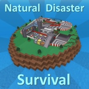
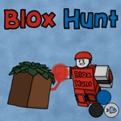
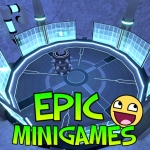
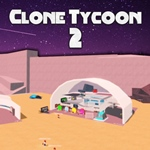
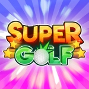
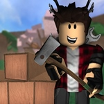

Jogos mais divertidos
Esses são os jogos favoritos dos criadores do site
| Jogos | Descrição |
|---|---|
| Natural Disaster Survival  |
Nesse jogo o jogador deve sobreviver a rodadas de desastres naturais em uma ilha. |
| Blox Hunt  |
Nesse jogo o jogador deve se esconder "fingindo" ser algum bloco no mapa, se o procurador não o acahar até acabar o tempo, eles ganham. |
| Epic Minigames  |
Dentro desse jogo há diversos outros mini jogos,
escolhidos aleatoriamente em cada partida, e cada um é bem diferente do outro, trazendo assim uma experiencia nova a cada partida. |
| Clone Tycoon 2  |
Nesse jogo o jogador melhorar seus clones para ganhar dinheiro, para melhorar seus clones, para ganhar mais dinheiro, para... Enfim, um ciclo infinito |
| Super Golf!  |
Esse jogo é como uma simulação do minigolf da vida real, nele você controla uma bola e compete com os outros jogadores para ver quem consegue acertar a bola com menos tacadas. |
| Lumber Tycoon 2  |
No lumber tycoon, você se trasforma em um lenhador, e seu trabalho é cortar árvores e vende-las. Com o tempo, você consegue mais dinheiro, que é usado para comprar machados melhores e processadores para vender a madeira por mais caro. |
| Obs: Se você clicar na foto, será redirecionado ao jogo 😉 | |